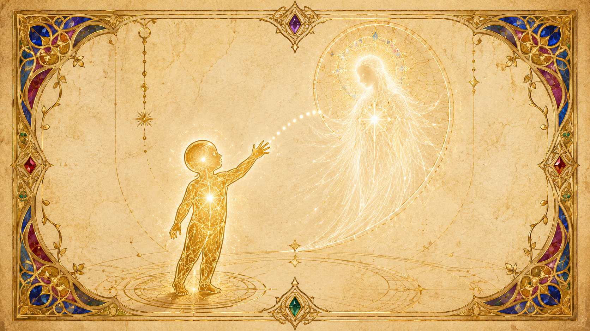
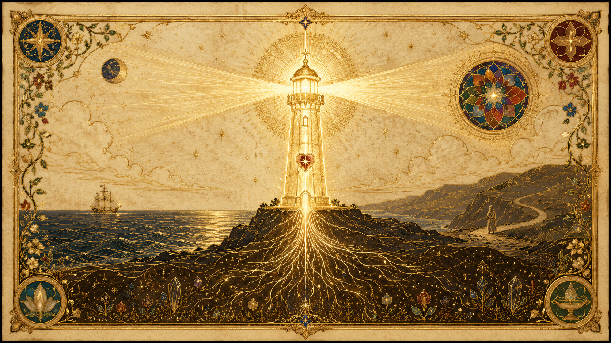
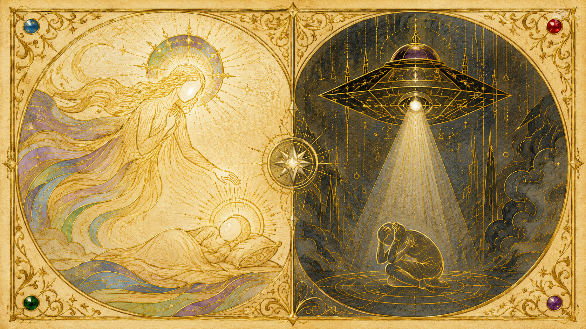

什麼是流浪者:悲傷的兄弟姊妹
「他們是悲傷的兄弟姊妹,回應求助的呼喚而來。」
提問者問 Ra:什麼是流浪者?Ra 的回答把這個身份的本質一次說清。流浪者是來自整個創造中無數「智能無限」源頭的存有,他們被同一份心願所結合——服務他人的渴望。Ra 給了他們一個名字:「悲傷的兄弟姊妹」(Brothers and Sisters of Sorrow),他們回應各處傳來的「求助呼喚」而前來。
關鍵在於他們本不屬於這裡。流浪者並不是地球本地循環演化出來的第三密度存有,而是已經走到更高密度——第四、第五,絕大多數是第六密度——的心/身/靈複合體,選擇暫時放下自己原本的層次,轉生進入第三密度的肉身,只為了在地球最需要的時刻伸出援手。換句話說,他們是「自願降級」前來的志願者:本可以待在更明亮、更和諧的密度,卻選擇穿過遺忘之幕,進入這個相對沉重、充滿苦難與分離意識的星球,把自己當成一份禮物獻出來。
正因為他們的來源跨越眾多密度、卻共享同一個服務他人的取向,Ra 才會用「兄弟姊妹」來形容——他們彼此之間、以及與被服務的地球人之間,本質上都是「他人即自己」的一體關係。而「悲傷」二字,則點出他們前來的理由與處境:他們是被悲傷召喚而來,也常在這趟旅程裡親身體嚐悲傷。
為何而來:回應地球悲傷的召喚
回應「求助的呼喚」
流浪者前來的根本動力,是回應一個星球發出的痛苦呼喚。Ra 說,當下這個時期之所以有大量流浪者湧入,是因為地球有著「密集的需求」——需要有人來減輕行星的振動,並協助這場收割。他們不是被派遣、被命令而來,而是因為聽見了這顆星球在分離與苦難中發出的悲鳴,出於服務他人的偏向,自願回應。
他們想做什麼:減輕行星振動
提問者問流浪者具體想達成什麼,Ra 給的答案有兩層。第一,是「以被請求的任何方式,服務這顆星球上的存有」——重點在「被請求」,他們不主動侵犯、不強加,而是在被召喚、被需要時提供協助。第二,則是讓「他們自身的振動模式減輕行星整體的振動,從而緩和行星不和諧所造成的影響」。也就是說,流浪者光是「存在於此、帶著高密度的振動」這件事本身,就已經在服務了。
Ra 特別澄清一點:流浪者並不是為了「某個尚未顯化的特定情境」而來。他們不是來執行某項預先排定的具體任務,而是依照各自已經發展出來的偏向與極性運作。換句話說,使命是廣義的「以自己之所是去服務」,而不是某張寫死的待辦清單。
收割時期的雙重契機
為什麼偏偏在收割的時期前來?提問者直覺地把流浪者的轉生和收割連在一起,Ra 確認了這個直覺,並指出此刻有「正向極化的豐沛機會」——一個重新想起自己所遺忘之事、藉此重新極化的良機。Ra 列出流浪者在收割期轉生的幾個理由:一是藉由「減輕行星意識的扭曲」來協助他人,並提供能提高收割潛能的催化劑;二是流浪者本身,只要「想起並獻身於服務,其極化的速度會遠遠快過」在催化作用較不強烈的高密度所能達到的。對流浪者而言,這趟艱難的下行,同時也是一次自身高速成長的機會。
來自哪些密度、地球上約有多少
約六千五百萬位,最大多數是第六密度
提問者問地球上有多少流浪者轉生,Ra 的回答是:「這個數字接近六千五百萬。」如此龐大的數量,是因為此刻有大量流浪者湧入,以減輕行星振動並協助收割。(這個數字其實經過一次修正:在較早的集會,Ra 與提問者一度算錯了位數,後來 Ra 澄清「適當的位數比先前所述少了一位」,把數字校正到約六千五百萬這個量級。)
至於來自哪些密度,Ra 說得很明確:「第四密度的很少。流浪者中數量最大的……是第六密度的。」也就是說,絕大多數流浪者其實是來自相當高層次的存有——這也使得他們與第三密度肉身之間的落差特別大,後面會看到這帶來的種種困境。
他們從哪裡來:Ra 自己的同族也在其中
那麼這些第六密度流浪者具體源自何處?Ra 透露,其中有相當一部分,正是來自 Ra 自己的社會記憶複合體。另外也有曾經協助過南美洲、以及曾經協助過亞特蘭提斯的存有群體。Ra 解釋他們前來的心情是一種回報:「正如我們曾被金字塔之類的形狀所幫助,我們如今也能幫助你們的人民。」這份跨越密度的集體決定,反映的是一種互惠的一體感——因為自己曾在演化途中受過幫助,如今便回過頭來幫助人類。
越靠近收割,來得越多
流浪者並不是一直都這麼多。Ra 描述了一條清楚的趨勢:「曾有少數幾位。有更多選擇加入這最近的兩萬五千年循環,還有非常非常多前來迎接收割。」五萬年前只有寥寥幾位;到了最近的兩萬五千年大循環,人數明顯增加;而真正大批湧入,是在臨近收割的近期。地球的呼喚越來越強烈,回應的流浪者也就越來越多。
通過遺忘之幕:格格不入與思鄉
為什麼必須遺忘
流浪者一旦轉生,就和所有第三密度存有一樣,落入了遺忘之幕——他們不記得自己是誰、來自何方、為何而來。提問者問:第六密度的流浪者,他的遺忘會不會隨著一層層密度身體的活化而階段性地逐步恢復?Ra 的回答只有一個字:「不會。」遺忘是徹底的,不分密度層級地一視同仁覆蓋下來。
Ra 給了遺忘存在的雙重理由。第一是「基因」層面的:心/身/靈複合體與身體細胞結構之間的連結方式,在純粹的第三密度和「第三/第四密度」(也就是轉生進來的高密度流浪者)之間是不同的。第二是為了維護「第三密度存有的自由意志」。Ra 說,如果讓流浪者完整穿透遺忘、想起一切,就會「活化更密集的身體,從而能夠以一種如神般的方式生活」——而這「對於那些選擇前來服務的存有而言,並不恰當」。流浪者若帶著全副高密度記憶與能力降臨,等於在第三密度的舞台上扮演神明,反而會壓垮這裡每個人本該自己做出抉擇的自由意志。
記得能力,卻施展不出來——嬰兒的比喻
這帶來流浪者最深的無力感:他們在更高密度本是療癒者、是能輕易調整萬物的存有,如今卻什麼都做不出來。Ra 用一個動人的比喻解釋。他說,你可以把流浪者看成一個試圖學說話的嬰兒:「溝通的能力的記憶就在嬰兒尚未發展的心智複合體之中,但要實踐或顯化這種被稱為言語的能力,卻不會立即出現,因為它所選擇成為其一部分的心/身/靈複合體有其限制。」
「流浪者也是如此——它記得在家鄉密度裡能多麼輕易地做出調整,然而既已進入第三密度,便因所選經驗的限制而無法顯化那份記憶。」
所以,即使是一個本領高強的流浪者療癒者,在這裡能成功療癒的機會,也只比本地的第三密度存有好上一點點——差別僅僅在於「服務的渴望可能更強烈、並選擇了這種服務方式」,但根本的限制依然存在:第三密度的肉身載具,在尚未經過充分發展與平衡之前,就是無法表達那些在高密度發展出來的能力。這份「記得卻做不到」的落差,正是思鄉與疏離感的源頭之一。

常見特徵與困境:格格不入、過敏與身體病症
嚴重的格格不入與疏離感
提問者問流浪者是否會經歷身體病症,Ra 的回答點出了流浪者最普遍的處境。由於密度之間的「振動變異」,流浪者通常會經歷「某種形式的障礙、困難,或一種嚴重的疏離感」,其中包括人格失調,以及身體適應上的困難,例如過敏。他們的高密度振動硬塞進第三密度的肉身與社會裡,就像把不同頻率的兩個系統強行接在一起,身心兩個層面都會出現排斥反應。這份「嚴重的疏離感」,正是許多流浪者一生揮之不去的底色:總覺得自己不屬於這裡、與周遭世界格格不入。
不同密度的流浪者,各有各的難處
Ra 進一步說明,來自不同密度的流浪者,會帶著不同的偏向,也因此各有各的陷阱。
第四密度流浪者(為數不多):傾向選擇那些「看似充滿愛、或需要愛的存有」。這份慈悲取向帶來一種脆弱——Ra 說,「由於以慈悲看待其他自我,實體有極大的可能性會在判斷上犯錯」。過度的慈悲容易讓他們做出失衡的決定。
第五密度流浪者:是「不太受其他自我各種光芒刺激所影響」的存有。他們往往迴避地球的習俗如婚姻,並對生育、養育孩子有一種反感——因為他們意識到「行星振動相對於光之密度的和諧振動」之間的不恰當。
第六密度流浪者:尋求極深的連結。他們「在很大程度上,會避開身體複合體那種雙性的生殖編程,轉而尋找那些能進行『完全融合』式性能量轉移的對象——在第三密度的顯化中盡其可能地」。這種「完全融合」指的是心、身、靈作為一個統一極性的交融,遠超過單純的肉體交合。
高密度轉生到第三密度,問題本就難免
提問者問:高密度存有轉生進第三密度,是否容易出問題?Ra 的回答既誠實又留有餘地:「第六密度轉生於第三密度,出現這類你所稱之為『問題』的可能性／機率相當大。」但他立刻補充:「如果你要這樣稱呼它的話,這不必然是個問題。這取決於每個處於這種情境或振動相對性配置中的心/身/靈複合體獨特的取向。」換言之,落差確實會製造困境,但這份困境是不是「問題」,端看當事人如何看待與運用它。
他們的任務與最大的風險
任務:當輻射器、當燈塔,像電池一樣替行星充電
流浪者究竟如何服務?Ra 在描述其機制時,給出了兩個基本功能,外加一份各人獨有的專長。第一個基本功能是「輻射」:Ra 說,「有些第四密度與第六密度的流浪者,作為愛與愛/光的被動輻射器或廣播器,其能力是巨大的」。他們不必做什麼,光是存在,就持續向外發散愛/光,使「行星之愛與光」產生加倍的效果。第二個基本功能是「燈塔或牧羊人」——為迷途者指引方向、看顧群羊。
除了這兩個基本功能,Ra 說「每位流浪者在轉生之前獻出自己時,都帶著某種特殊的服務」——一份預先帶入的、獨一無二的天賦。提問者把這個機制比喻成像電池充電那樣替行星意識充能,Ra 確認:「這是正確的,而其機制正如你所述。」流浪者就像散布在行星各處的充電器,以自身的高密度振動,一點一滴替整顆行星的意識充電。

最大的風險:忘記使命、捲入業力、被捲走
但這趟任務有它的危險。Ra 在最初定義流浪者時就已點出最大的風險:他們可能「忘記自己的使命,捲入業力,最終被捲入它原本為了協助修正而前來的那同一個漩渦之中」。流浪者本是來幫地球脫離分離與苦難的漩渦,結果卻可能反被這個漩渦吞沒——這是最深的反諷,也是最真實的危險。
業力是怎麼捲上來的?Ra 說得很直接:「一個在與其他存有的互動中,以一種有意識地不愛的方式行動的實體,可能會捲入業力。」遺忘之幕讓流浪者不記得自己是誰,於是他們和本地人一樣,會在憤怒、傷害、操縱中累積起新的業力牽絆,把自己越纏越緊。
Ra 也談到流浪者實際的困境。許多流浪者「對行星方式的失調」,使他們陷入某種心智複合體的活動配置之中,而這「在相應的程度上,可能會妨礙他們原本打算提供的服務」。也就是說,光是適應不良、被地球的種種拉力卡住,就足以讓一個流浪者無法施展他原本想做的服務——還不必走到負向,光是「卡住」本身就是一種任務的折損。
更嚴重的風險:被地球的負向拉力捲向負面
最壞的情況是流浪者不只忘記使命,還被地球的負向拉力捲向負面取向。Ra 說,流浪者在進入第三密度後,在心/身/靈複合體上「完全成為第三密度的造物」,因此和本地人一樣容易受獵戶思想形態的影響。如果一個流浪者「透過行動展現出對其他自我的負向取向」,他就會面臨和負向本地人完全相同的後果——「被困入行星振動之中」,而在收割時,甚至「可能再一次以行星實體的身分,重複第三密度的大師循環」。本來是來收割、來提升的高密度存有,卻可能因為迷失而被打回原點、重走一整圈第三密度。這就是流浪者賭上的代價。
誰會來接觸流浪者:邦聯 vs 獵戶
「在一個無盡合一的宇宙裡,所有的相遇,不都是自己與自己的相遇嗎?」
流浪者是高優先目標
提問者問:流浪者是不是獵戶集團的「高優先目標」?Ra 的回答只有一句:「這是正確的。」流浪者帶著高密度的振動與服務他人的潛力,正是負向勢力最想拉攏或移除的對象。也因此,流浪者特別容易成為各方接觸的焦點——而能不能分辨來者是正是負,就格外重要。
正向邦聯:只用思想投射,絕不侵犯自由意志
Ra 說,邦聯接觸流浪者最有效率的方式,正是像 Ra 與這個團體當下這種通訊方式。而對於那些戲劇性的「近距離接觸」,Ra 說:「對自由意志的侵犯是極不被樂見的。因此,你們幻象層面上的那些流浪者,將是構成所謂『近距離接觸』之思想投射的唯一對象。」邦聯只接觸流浪者,且只用「思想投射」——飛行器是出現在主觀經驗中的思想形態,而非實質密度的物體。
Ra 舉了一個叫莫里斯(Morris)的例子:這位流浪者先是接收到一個要他搬遷的內在引導,之後遭遇一個以視覺形態現身的思想形態存有;這次甦醒經驗,激發了他去尋求更深的靈性理解。邦聯接觸的目的,正是「活化流浪者的意識」。
負向獵戶:用實體手段製造恐懼與控制
對照之下,獵戶的飛行器是透過「實體」手段運作的,設計用來「灌輸恐懼、展示控制」。這正是分辨兩者最實用的指標——看它帶給你的是恐懼還是甦醒。Ra 說,邦聯所採用的甦醒方式相當有彈性:有些在睡眠中接觸,有些在白天的活動中,核心是「將恐懼降到最低」,創造出一次有意義、可被理解的主觀相遇。即使是那些「身體檢查」之類的經驗,Ra 說也是「透過個人潛意識的期待」而顯化的——邦聯會在當事人預期的框架內,把驚恐降到最低。獵戶製造恐懼,邦聯避免恐懼。

盔甲、與「自己與自己相遇」
那麼流浪者比本地人更能識破騙局嗎?Ra 的回答很微妙。流浪者在心/身/靈複合體上完全成為第三密度的造物,因此一樣容易受獵戶思想形態影響;但他們的靈複合體擁有一層「光的盔甲」,使他們較能辨認出不恰當的影響。不過 Ra 提醒,這「不過是一種偏向,不能稱之為一種理解」。而且流浪者往往「較少被第三密度正/負混淆的狡詐所扭曲」,反而會比較慢才認出負向的思想或存有。
正向流浪者很少遭遇負向存有;一旦發生,通常是因為獵戶「誤判了該流浪者正向的深度」,或刻意想把這個正向影響從地球移除。最後,Ra 用一句幽默為整件事定調:在一個無盡合一的宇宙裡,「近距離接觸」這個概念本身就很好笑——因為所有的相遇,難道不都是自己與自己的相遇嗎?無論來者是邦聯還是獵戶,究其根本,都是「他人即自己」。
如何醒來、認出自己、療癒與服務
多少流浪者真的醒了過來
提問者問:有多少流浪者真正穿透了遺忘的封鎖、有意識地認出自己?Ra 給的數字並不樂觀:只有約 8.5% 到 9.75% 的流浪者「有意識地穿透了記憶封鎖」;不過,有超過 50% 的流浪者「對自身的症狀有所覺察」——也就是說,雖然只有不到一成真正想起自己是流浪者,但有一半以上至少隱約感覺到自己「不太一樣」、和這個世界有種說不上來的疏離。從「感覺不對勁」到「真正認出自己」,中間還有一段路。
認出自己:那份疏離感本身就是線索
從前面各節可以拼出流浪者認出自己的線索:那份嚴重的、揮之不去的疏離與格格不入感;對地球某些習俗(婚姻、生育)莫名的抗拒;原因不明的過敏與身體病症;以及一種深層的思鄉——彷彿「家」在別的地方。Ra 把這些都歸因於密度之間的振動變異。對流浪者而言,認出自己的第一步,往往不是想起什麼宏大的記憶,而是把這些一直以來的「不對勁」,重新理解成「我本來就來自別處、為服務而來」。
療癒之道:認出內在的智能無限
提問者問流浪者如何自我療癒,Ra 的回答把焦點放回內在。自我療癒「透過認出安歇於內在的智能無限」而發生,這需要有意識地覺察到靈性的實相,並平衡各能量中心——特別是要處理「靛藍光(松果體)中心」的阻塞。流浪者的病症,根本上來自高密度振動與第三密度肉身的落差;而療癒之鑰,不在向外求,而在向內想起「智能無限本就安住在我之內」,讓被堵塞的能量中心重新暢通。
服務之道:做你本來就是的那道光
流浪者該如何服務?從 Ra 的描述看,答案其實出奇地樸素。流浪者最基本的服務並不是去「做」什麼驚天動地的大事,而是「以自身的振動存在於此」——當愛與愛/光的被動輻射器、當燈塔與牧羊人,像電池一樣替行星意識充電。再加上各人轉生前帶入的那份獨特天賦,在被請求、被需要時自然地獻出。Ra 一再強調,流浪者「以被請求的任何方式」服務,而非主動侵犯;他們不必想起全部記憶、不必施展神通,光是醒過來、認出自己、活出那份服務他人的取向,本身就已經在減輕整顆行星的振動了。對流浪者而言,醒來與服務其實是同一件事:想起自己是誰,然後,就做那道你本來就是的光。